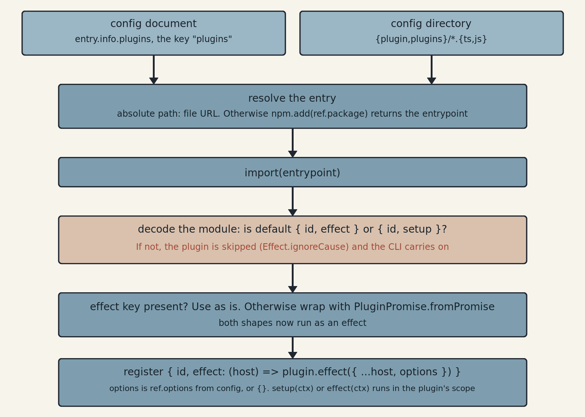

OpenCode 2 skips any plugin whose default export lacks an id and a setup or effect function
OpenCode 2.0.22 decodes a plugin's default export against { id, setup } or { id, effect }, so a v1 export with only server() fails the check and is skipped.
A plugin is the default export of one file
import { Plugin } from "@opencode/plugin"
export default Plugin.define({
id: "example",
async setup(ctx) {
await ctx.storage.set("loaded", true)
},
})tsc --strict --module nodenext against @opencode/plugin 2.0.22.1That file is a complete OpenCode 2 plugin. OpenCode is an open-source terminal coding agent, and a plugin is a TypeScript module its CLI imports at startup to add tools or to change behavior at hooks, the named points where the host calls plugin code. The default export is the object that Plugin.define returns, and define returns its argument unchanged. In @opencode/plugin 2.0.22 the compiled function is export function define(plugin) { return plugin; }, so it exists only to type the object.1 The id names the plugin. The migration guide says plugin storage is scoped by it and that status and diagnostics identify the plugin with it.2 setup(ctx) runs when the plugin loads and may return a cleanup function that runs when the plugin unloads.3 The ctx argument is the context object. Its members are the host's domains, each the API for one part of the host: storage above, and also tool, shell, session, event and others.1
The package is recent. @opencode/cli 2.0.0 was published to npm on 2026-09-11 and @opencode/plugin 2.0.0 on 2026-09-12 (UTC), and both had reached 2.0.22 by 2026-10-02, after 23 stable versions in 21 days.45 The project's GitHub release list shows only 1.18.x releases and no announcement of 2.0.0 was found, so the npm publish times are the only release dates this article has.6 Use is real and partial. Eight dated issues and pull requests in six third-party repositories record plugins that moved, planned to move or broke between 2026-08-15 and 2026-10-01. In the week to 2026-10-01 npm counted 174,464 downloads of @opencode/plugin against 25,688,212 of its v1 predecessor, @opencode-ai/plugin.7
What the loader checks before setup runs

The loader is a function in the repository at packages/core/src/config/plugin/external.ts, 91 lines at commit 907b3bc. The CLI binary contains it, and the @opencode/cli package on npm is only a launcher that installs the platform binary.85 Plugins reach the loader in two ways. A config document lists them under the key "plugins", each item a package name or an object { package, options }. A file:// item becomes a file path, and items starting with ./ or ../ resolve against the config file's directory. A config directory contributes the files matched by {plugin,plugins}/*.{ts,js}, which means .ts and .js files directly inside the directory, sorted.8
An absolute path is imported as a file URL. Anything else goes through npm.add(ref.package), which returns an entrypoint. How it chooses a version was not read.8 The loader then runs import(entrypoint) and decodes the module against a schema that requires default to be a struct of one of two shapes, { id: string, effect: function } or { id: string, setup: function }. If the value has an effect key it is used directly. Otherwise it is wrapped with PluginPromise.fromPromise, so the shape the host runs is always the Effect one.89 The registered plugin is { id, effect: (host) => plugin.effect({ ...host, options: ref.options ?? {} }) }, which is where ctx.options gets the options from the config entry.8
Each plugin's load is wrapped in Effect.ignoreCause. A plugin that fails to import or fails the schema is skipped, and neither the CLI nor the other plugins stop.8 The loader file does not show what gets logged on a skip. One user reports that the host logs a warning only.10 One detail is documented but could not be confirmed in that file. The docs say a plugin at .opencode/plugins/example/index.ts loads automatically, but the glob matches only files directly in the directory, and the code path that would load a subdirectory entrypoint was not found, so the examples here use .opencode/plugins/example.ts.38
The Effect form puts the plugin lifetime in a Scope
import { Plugin } from "@opencode/plugin/effect"
import { Effect } from "effect"
export default Plugin.define({
id: "example",
effect: (ctx) =>
Effect.gen(function* () {
const storage = ctx.storage
yield* storage.set("loaded", true)
}),
})tsc --strict --module nodenext against @opencode/plugin 2.0.22 with effect 4.0.0-rc.112.1The import path is @opencode/plugin/effect, and the docs install it with bun add @opencode/plugin effect.11 The type declaration is Plugin<R = Scope.Scope> with effect: (context: Context) => Effect.Effect<void, never, R>.1 The error channel is never, so an effect that can fail has to handle the failure itself. The docs put the idea this way: "@opencode/plugin/effect is the Effect-native version of the OpenCode plugin API. Its context operations return Effects or Streams, callbacks return Effects, and plugin lifetime is represented by Scope."11 The package depends on effect 4.0.0-rc.112, a release candidate.4
Since the loader runs only the Effect shape, the Promise form is a wrapper. fromPromise(plugin) returns define({ id, effect }), and its doc comment says: "Hook registrations created during the async setup attach to the plugin's scope, so unloading the plugin disposes them." The same comment says the captured fiber context keeps boot-time batching, so Promise transforms coalesce into one reload per domain.9 A Promise plugin therefore gets the scope-bound cleanup of its hook registrations without any Effect code.
A tool and a hook, registered through ctx
import { Plugin } from "@opencode/plugin"
export default Plugin.define({
id: "greeting",
async setup(ctx) {
await ctx.tool.transform((editor) => {
editor.add({
name: "greeting",
description: "Create a greeting",
input: {
type: "object",
properties: { name: { type: "string" } },
required: ["name"],
additionalProperties: false,
},
async execute(input) {
return { content: `Hello ${(input as { name: string }).name}!` }
},
})
})
await ctx.tool.hook("execute.before", (event) => {
console.log(event.tool)
})
},
})ctx.tool.transform takes a callback that receives an editor, and editor.add registers a tool with a name, a description, an input written as JSON Schema and an execute function that returns { content }.12 The example casts input to { name: string } to read it. The declared transform type is (callback: (input: Input) => void) => Promise<Registration>, so the callback is synchronous and the call is awaited. A Registration is { dispose(): Promise<void> }.1 The docs add that transforms are replayed when a registry rebuilds, and that a plugin calls the domain's reload() after external inputs change. That is documented, and was not exercised here.3
ctx.tool.hook("execute.before", callback) registers a hook, and the callback receives one event. The 2.0.22 type declaration lists its fields as tool, sessionID, agent, messageID, id and input. The "execute.after" event has the same fields plus a status, which is "completed" with a result or "error" with an error.1 The migration guide says v2 hook callbacks receive one mutable event where v1 callbacks received (input, output).2
Only some hook names appear in the 2.0.22 type declarations. The table separates those from names that appear only in the docs, which this article could not check against the package.
| Domain | Hook names | Evidence |
|---|---|---|
| tool | execute.before execute.after | In the 2.0.22 type declarations, with the event fields listed above. |
| shell | create.before | In the type declarations. The event has command, cwd, timeout, shell and env, all mutable. |
| session | model.request http.request http.response | In the type declarations, with three experimental.ws.* hooks. |
| session | prompt context compaction generate title retry | Documented only. |
| permission | evaluate | Documented only. |
Porting a v1 plugin takes a new export and a new config key
A v1 plugin in the project's v1 documentation is a named export, an async function that receives { project, client, $, directory, worktree } and returns the hooks, typed with import type { Plugin } from "@opencode-ai/plugin" and listed in config under "plugin".12 The v1 package's root types in 1.18.34 declare Plugin = (input: PluginInput, options?: PluginOptions) => Promise<Hooks> and PluginModule = { id?: string; server: Plugin; tui?: never }.13
| v1 | v2 | |
|---|---|---|
| Package | @opencode-ai/plugin 1.18.34, published 2026-09-30 | @opencode/plugin 2.0.22, published 2026-10-02 |
| Entry | A named export of type Plugin, or an object { id?, server } | A default export { id, setup } or { id, effect } |
| Config key | plugin | plugins |
| Hook callback | (input, output) | One mutable event |
The v1 package keeps the v1 shape at its root and still ships: 1.18.34 came out on 2026-09-30. It also exports ./v2/effect, ./v2/promise and ./v2/effect/plugin subpaths.13 The migration guide says config can be normalized automatically and implementation code must be ported: "V1 plugin implementations do not run in V2. Moving a file or renaming its config entry is not enough." The config change is the key, "plugin" to "plugins", and the [path, options] tuple becomes { package, options }.2
What a v1 plugin does under v2 comes from three user reports, since the binary was not run for this article. A v1 plugin has no default export carrying setup or effect. The named-export form has no default at all and the object form has only server, so by the loader's schema either fails the decode and is skipped. Reporters quote the same error in each: "Plugin must export a default definition with an id and an effect or setup function." In Honcho's tracker, @honcho-ai/opencode-honcho 0.1.4 declares @opencode-ai/plugin ^1.18.23 and fails to load on @opencode/cli 2.0.12.14 In Gortex's, v0.64.5 under OpenCode 2.0.15 prints the error with (cause: SchemaError(Missing key at ["default"])). Its deny, enrich, nudge and session-briefing hooks go inactive while its MCP tools keep working.10 The oh-my-openagent issue lists the changes its author sees as required and states that no workaround exists, so users stay on v1 until the port is done.15 The error string was not found in the source that was read. The Missing key suffix fits the schema decode in the loader, so the string is reported here, not source-confirmed.8
+import { Plugin } from "@opencode/plugin"
+
export default {
+ ...Plugin.define({
+ id: "example",
+ async setup(ctx) {
+ await ctx.tool.hook("execute.before", () => { console.log("A tool is about to run") })
+ },
+ }),
async server() {
return { "tool.execute.before": async () => { console.log("A tool is about to run") } }
},
}server(), and the v2 half is the migration guide's dual export.2The diff adds a v2 definition and removes nothing. Both sets of keys sit on one object, so OpenCode 2 reads id and setup and an OpenCode 1.18 reads server.2 The guide says the object form with server() is supported in OpenCode 1.18.29 and newer, and that older v1 releases may expect function exports, so a plugin supporting them needs separate package versions or entrypoints.2 Gortex's pull request 852 drops the @opencode/plugin dependency as well, since define is an identity function: export default { id: "gortex", setup, server };. Its description says the one file works on OpenCode 1.18 and 2.0.21, and the pull request was open when read.161 It followed pull request 851, whose maintainer listed three faults. A fallback exported undefined as the default when @opencode/plugin could not be resolved, and OpenCode 1.18 rejected that. The code read event fields as event.callID and event.output where the real ones are event.id and event.result. And the dependency was one the file did not need.17 The 2.0.22 declarations give id and result for the tool hook event.1
The merged port in opencode-parser, from 2026-09-29, replaced the @opencode-ai/plugin dependency with @opencode/plugin, added a Plugin.define entry whose setup registers a parse tool through ctx.tool.transform, and kept the v1 tool alongside. Its README tells v1 users to keep the "plugin" key and v2 users to use "plugins".18
The hooks need a mapping, and the migration guide supplies one. The third column says where each v2 name is confirmed.
| v1 | v2 | v2 name confirmed in 2.0.22 declarations |
|---|---|---|
| tool.execute.before | ctx.tool.hook("execute.before") | Yes1 |
| shell.env | ctx.shell.hook("create.before") | Yes1 |
| chat.headers | ctx.session.hook("model.request") | Yes1 |
| chat.params | ctx.session.hook("context") | Documented only |
| chat.message | ctx.session.hook("prompt") | Documented only |
| permission.ask | ctx.permission.hook("evaluate") | Documented only |
| event | ctx.event.subscribe() | Domain exists; event types not checked1 |
| dispose | The cleanup function that setup returns | Yes, as the Cleanup type1 |
| tool() definitions | editor.add inside ctx.tool.transform, with JSON Schema input | Yes, as in the example above1 |
Four v1 hooks have no direct v2 equivalent in the guide: experimental.compaction.autocontinue, experimental.provider.small_model, experimental.text.complete and command.execute.before. The $ Bun shell helper has none either.2 The port request for opencode-vision calls the work "mostly mechanical" and lists Bun globals to be replaced with Node fs, a v1 FilePart.url base64 value to become a v2 MediaPart, and tool.definition to become ctx.tool.transform().19 Whether that is mechanical depends on which of those a plugin uses.
v1 is still installed about 147 times as often
| Package | Downloads |
|---|---|
| @opencode-ai/plugin (v1) | 25,688,212 |
| @opencode/cli (v2) | 183,569 |
| @opencode/plugin (v2) | 174,464 |
v2 has not displaced v1. The v1 plugin package was downloaded about 147 times as often as the v2 one, and it kept releasing, with 1.18.34 on 2026-09-30.713 The migration is real and early. The eight items below run from a plan written during the v2 beta to a merged port, in six repositories. They are a sample of the ones that were opened, not a count of migrations.
| Date | Item | What it records | State |
|---|---|---|---|
| 2026-08-15 | opencode-pty issue 5520 | A plan to keep the v1 entry point and add a separate v2 export, written before the npm release. Its test is that the plugin appears in opencode2 api get /api/plugin. | Closed with PR 59 |
| 2026-09-19 | oh-my-openagent issue 848915 | v4.19.4 and v5.0.0-beta.78 fail to load on v2. | Closed |
| 2026-09-21 | opencode-honcho issue 4614 | 0.1.4 fails on @opencode/cli 2.0.12. | Closed, linked to PR 50 |
| 2026-09-26 | opencode-vision issue 519 | A port request with named mappings. | Open |
| 2026-09-28 | gortex issue 83010 | v0.64.5 hooks inactive on OpenCode 2.0.15. | Open, linked to PR 852 |
| 2026-09-29 | opencode-parser PR 218 | A port that keeps both versions in one package. | Merged |
| 2026-10-01 | gortex PRs 851 and 8521716 | Two dual-export attempts, the second dependency-free. | Both open |
The failure in these items is quiet. Gortex's MCP tools kept working while its hooks went inactive, and the host logged a warning only.10 The opencode-pty plan names a check that does not depend on the log: after loading, the plugin should appear in the output of opencode2 api get /api/plugin.20
Sources
- npm · @opencode/plugin 2.0.22 package tarball (type declarations)
- OpenCode · Migrate a v1 plugin (v2 documentation)
- OpenCode · Plugins (v2 documentation)
- npm · @opencode/plugin package metadata
- npm · @opencode/cli package metadata
- GitHub · anomalyco/opencode releases
- npm · weekly download counts (api.npmjs.org)
- anomalyco/opencode · packages/core/src/config/plugin/external.ts at 907b3bc
- anomalyco/opencode · packages/core/src/plugin/promise.ts at 907b3bc
- zzet/gortex · issue 830
- OpenCode · Effect plugins (v2 documentation)
- OpenCode · Plugins (v1 documentation)
- npm · @opencode-ai/plugin 1.18.34 package
- plastic-labs/opencode-honcho · issue 46
- code-yeongyu/oh-my-openagent · issue 8489
- zzet/gortex · pull request 852
- zzet/gortex · pull request 851
- TejasS1233/opencode-parser · pull request 2
- JochenYang/opencode-vision · issue 5
- shekohex/opencode-pty · issue 55